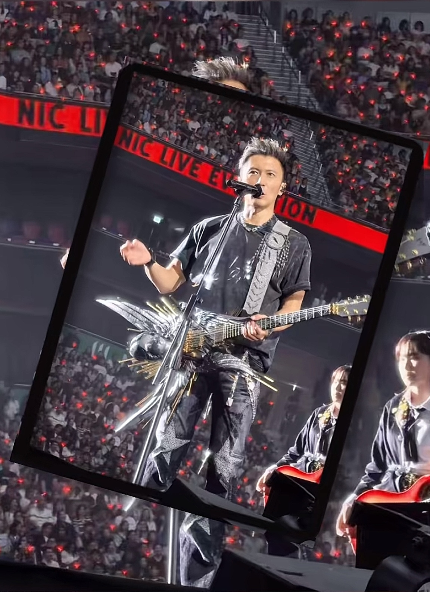

这是特效，猫咪是不可能会做这些的[泣不成声]
宫百万，一个吃无骨肉差点把自己噎死的奶虎
你把宫百万动不动饿一顿
包谷是东北谷吗？怎么也这么站

刚刚直播截的哈哈哈哈哈哈

包谷妈妈能不能单出一期来念粉丝的名字，“这是xxx”想听包谷妈妈念的[猪头][猪头][猪头]
包谷一只眼睛看姨姨，一只眼睛看妈妈哈哈哈[色]

这个包谷萌的不能行[眼含热泪]
包谷妈妈包谷妈妈叫我叫我，我也要[泣不成声][泣不成声]我是谁，包谷妈妈
每晚八点，包谷动画解说开始啦～
是棋子，是弃子，唯独不是妻子[流泪][流泪][流泪][流泪][流泪]
无论是未婚妻还是妻子一个都没能留住[流泪]
这个结局到底怎么对得起他们 我真的哭了一晚上了[流泪][流泪][流泪]故事鲜艳而缘分却太浅[流泪]
饭都凉了 我上桌了[流泪][流泪]
“墨池中心的上官大小姐，是宫二先生的心上人”[流泪][流泪][流泪]
“明德皇后曲氏，西洲嫡公主，帝发妻，年十八，薨”。
都有浅了 必须是我们的夜色尚浅[泣不成声][泣不成声]杜鹃花开了一年又一年我们一定会等到我们的二搭
“我不怕她惹麻烦 我怕她过不好”
这个结局怎么配得上他们一路的颠沛流离[流泪][流泪][流泪]
明明就差一点点他们就能幸福了。。。[流泪][比心]
"你的爱太小声了 我听不见 我不敢爱"
故事已经开始褪色了[流泪]
磕我们夜半CP的列队[流泪][OK]
她一开口就是慵懒惬意的感觉，如盛夏的午后，微风吹过脸庞一样清爽。
“亲手删了自己喜欢的人站出来”[流泪]
小王姐姐每次唱歌感觉嘴巴都张不开，但还是能这么好听[玫瑰]
燕小乙练成大宗师会是啥样
燕小乙好厉害，五竹也只能拖住他一会儿[看]
最后你在高楼之上，看着兄弟向远处走去，然后切换镜头，兄弟的衣服下面隐约露出了组织的标记[看]
最后你和兄弟碰杯，喝下后中毒而死。兄弟慢慢走远，风中传来他的叹息声。
大咪到底啥品种啊，看多了真感觉和大傻子一样[泪奔][泪奔]
大咪妈妈对大咪挺好的，为啥大咪总这样[捂脸]
最喜欢大咪说“对咯”和“狗东西”[看]
有个地方你千万别碰，那就是猫咪的小裤裆[舔屏]
有没有一个号是小咪爱妈妈[黑脸]
现在这玩意变成我主机了[愉快]
要不要点赞呢[尬笑]
可是好像能买一个16的基础款了[黑脸][强壮]
备用机不是安卓怎么起飞[捂脸][捂脸]
不好了孩子们，我的二手苹果十二mini滞销了
谁家备用机用苹果[比心][憨笑]
我64买了个苹果6，能刷视频能听音乐，它爆了我都夸它[黑脸]
黄宗洛老爷子一在场，再大的腕也只能是配角。
这老太监心还不错，只用老板出了气就行，要是按侮辱上差的罪名判这家一个都留不下
这时候我就不得不拿出这张图了
杨利伟上天空的时候，那真是全国老百姓都在看
路虽远，行则将至[流泪]
我怎么感觉中国天天都在发火箭[憨笑]
喜欢霆锋的我们都多大了？ 我先来，36
现在他眼里泛泪光，二十年前他可不会，只会酷酷的摔吉他[流泪]
一套衣服，唱了31首歌，没有嘉宾，没有休息，没有多余的话，唱了接近三个小时。这就是谢霆锋[赞][赞][赞] 
绿色真的太好看了
大胖橘的胡子和嬛嬛的刘海是一样的[抠鼻][抠鼻]
有的时候真的想跪下来求自己别看了，可是发现我跪下来还能告发熹贵妃私通[泪奔][泪奔][泪奔]
医生可能在想，这小玩意儿真好玩[捂脸]
这些全是我爱吃的啊[流泪][流泪][流泪]
我以为你们家朋友聚餐呢，你说这是给狗吃的[尬笑]
《珍珠少》《给珍珠》《珍珠》《给珍珠鸡心》
男主人和珍珠到底什么关系[捂脸]偷偷加一个
上个视频给小孩的[憨笑]
我跟珍珠吃一碗就行了 我叫奶茶[赞]
看老半天馋死我了，给狗的啊
韩国人来了以为是国宴
给我加个碗吧求求了🥺
珍珠的，希望的，天意的，花生的，瓜子的，起子的，花花的，马小虎的…
就说该不该拿掉花生的花卷！！谁家小狗没脖子啊[泪奔]
害怕他俩演着演着像做我的猫一样真一起
你俩合约啥时候到期啊，我朋友有点不舒服了[微笑][微笑][微笑][微笑]
古人对小人的定义：好变常，好生事，好生奇。
我第一次听到高教授说中文[泪奔]
高教授太厉害了，别的博主发个视频恨不得一句话一剪辑，高教授直接侃侃而谈，钦佩！[泣不成声]
教授名言：We don’t Care.
辛好开国大典有视频[憨笑]
这个嘎嘎爱说话的受众群体估计都是三四十岁以上的大哥大姐大叔大妈。还有很多舔她的。[憨笑]
[捂脸][捂脸]英语书出版前没有英语； 1754年的英国人：
知道为什么只抓牛顿，爱因斯坦吗，因为这些初中就能听到，为什么不霍霍一下库仑，卡文迪许或洪特，路易斯呢，因为这些都要高中大学以后才接触到[看][看]
牛顿（1643~1727)，原名朱慈炖，是崇祯帝的幼子。1644年，牛顿出生不久，明朝灭亡。皇家一个忠义的锦衣卫抱着襁褓中的牛顿跳海逃避追杀。后被一民间自私改装走私的郑和远洋大船救起，颠沛流离逃到英国。 为了改头换面，自此去掉朱的一撇一捺，改朱为牛，因为一撇一捺是个 “人”字，去掉一撇一捺寓意劫后余生、两世为人。又因自己处于异国他乡，自觉愧对先祖，故将字辈“慈”字隐去，改“炖”为顿， 以示顿悟。锦衣卫在逃难之际，顺手带走了几册《永乐大典》，牛顿便一边长大一边靠研究《永乐大典》里面的知识维持生计。他的数学和自然科学方面的贡献，大多是《永乐大典》记载的，使西方科技发展短短百年瞬间井喷。 而留在国内的《永乐大典》恰好就缺了那几册关于自然科学数学方面的内容，导致大清发展跟不上时代……
我算是知道她的受众是谁了[尬笑]
为什么我高考碰不到她和她的支持者[流泪]
造谣一张嘴，辟谣跑断腿。跟她这么一比，猫一杯真的太冤了
这种人被牛爵爷看到了，当天晚上就在泰晤士河游泳了[赞]
不行了，我一想到他的粉丝以后会在物理试卷上写，根据《永乐大典》得...
[看]不是，邵雨琪知道吗
他是介样哭的
出门在外，儿子是自己给的[害羞]

他头好圆！！！圆规画的一样[赞][赞][赞]
Read more: